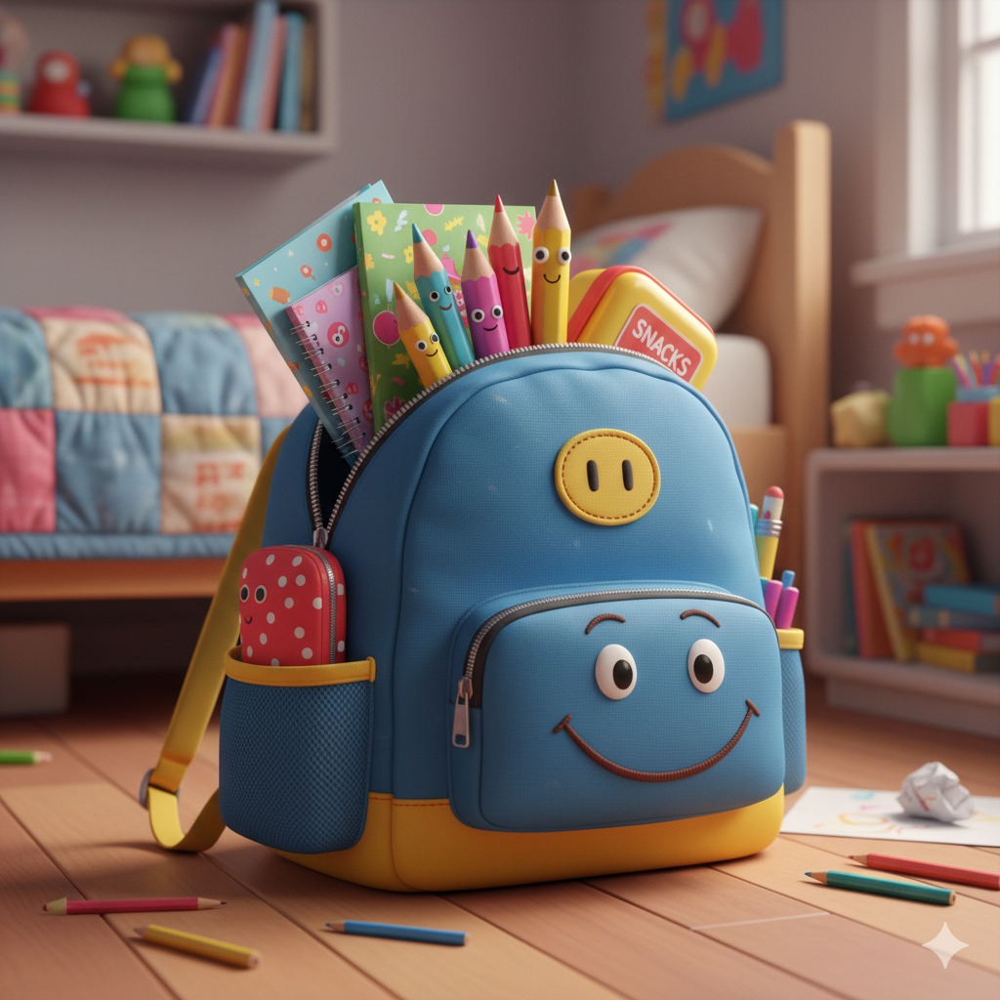
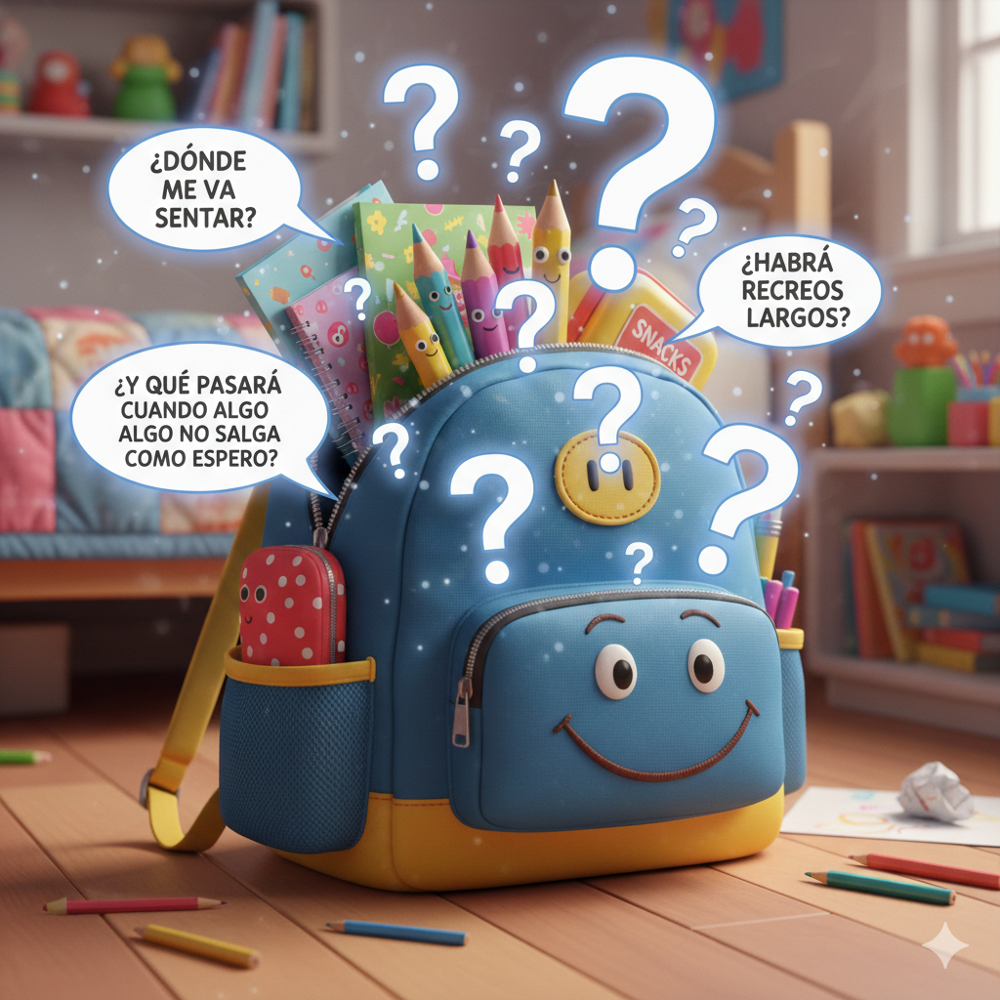
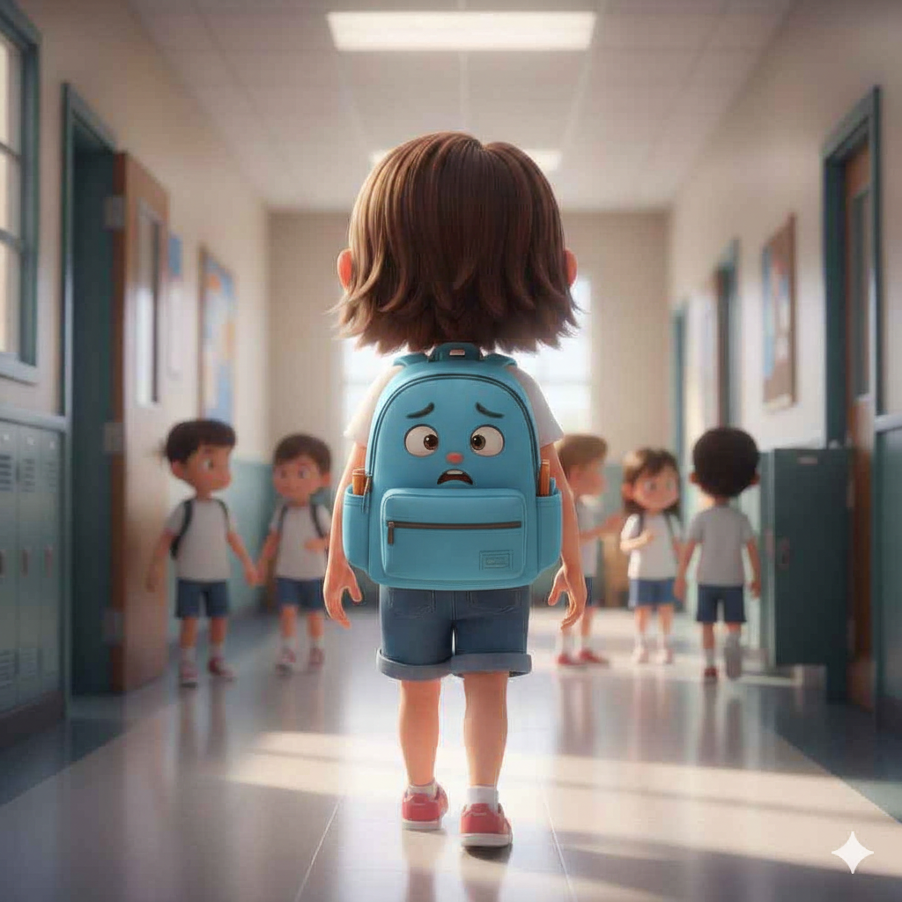
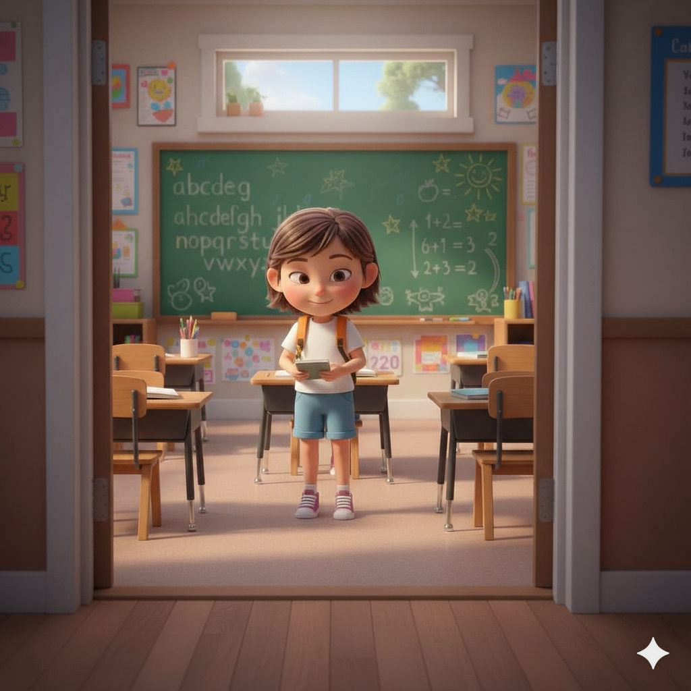
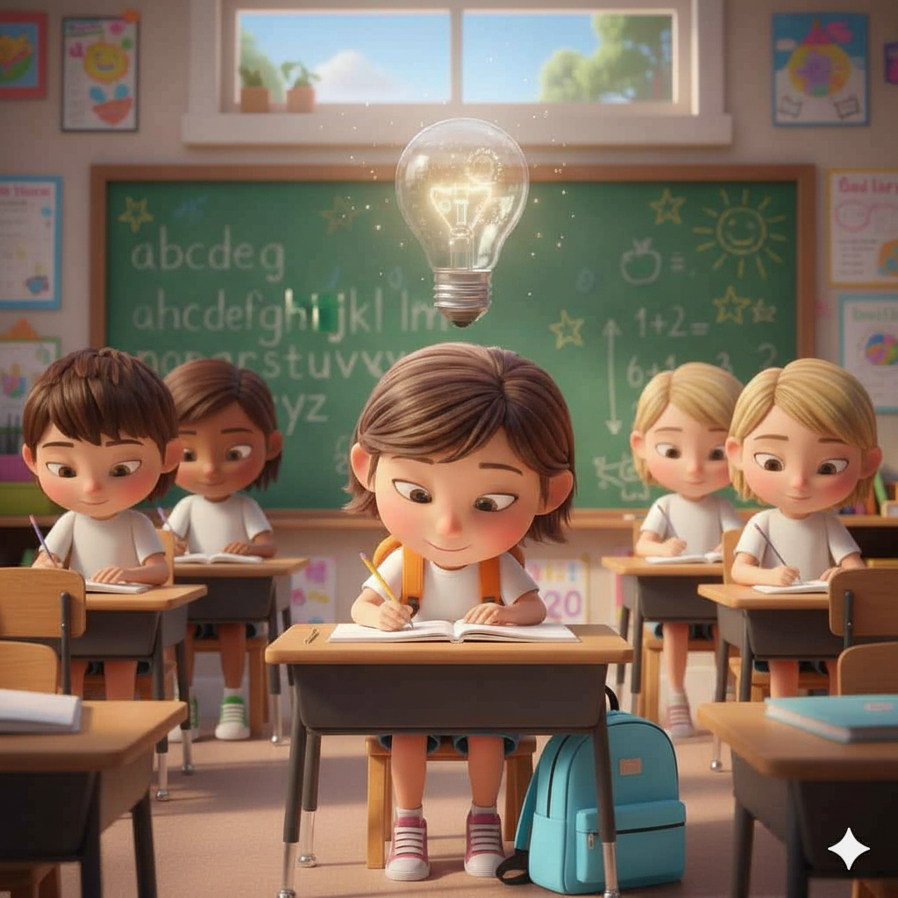
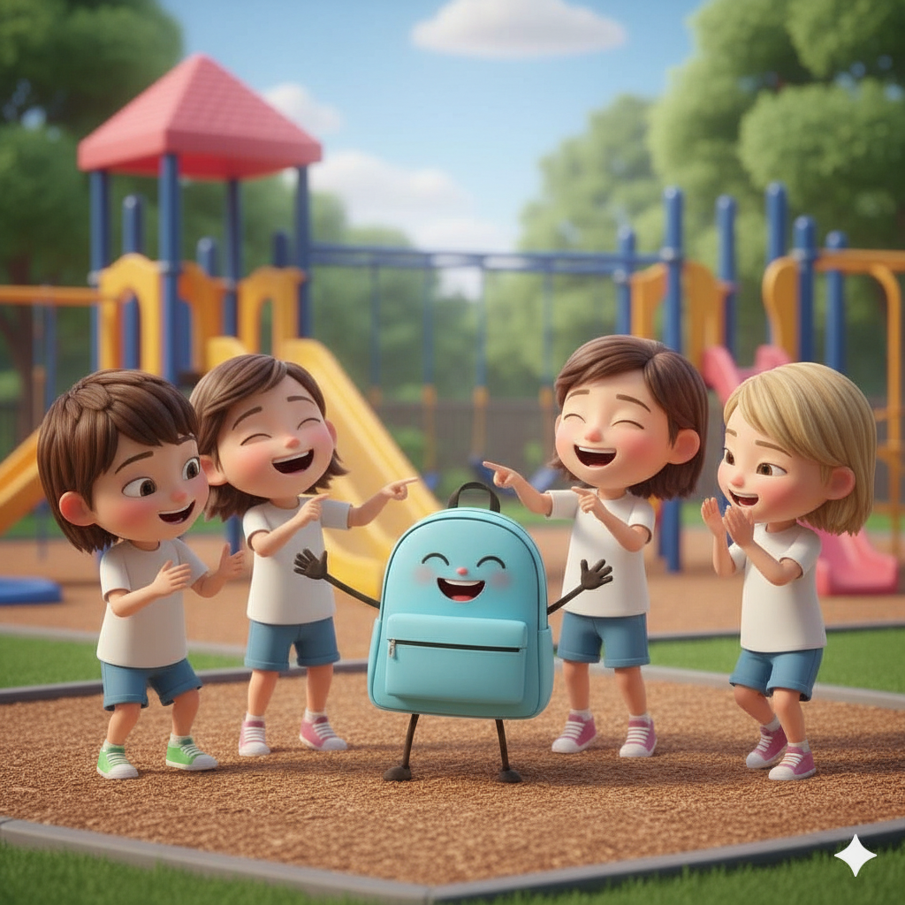
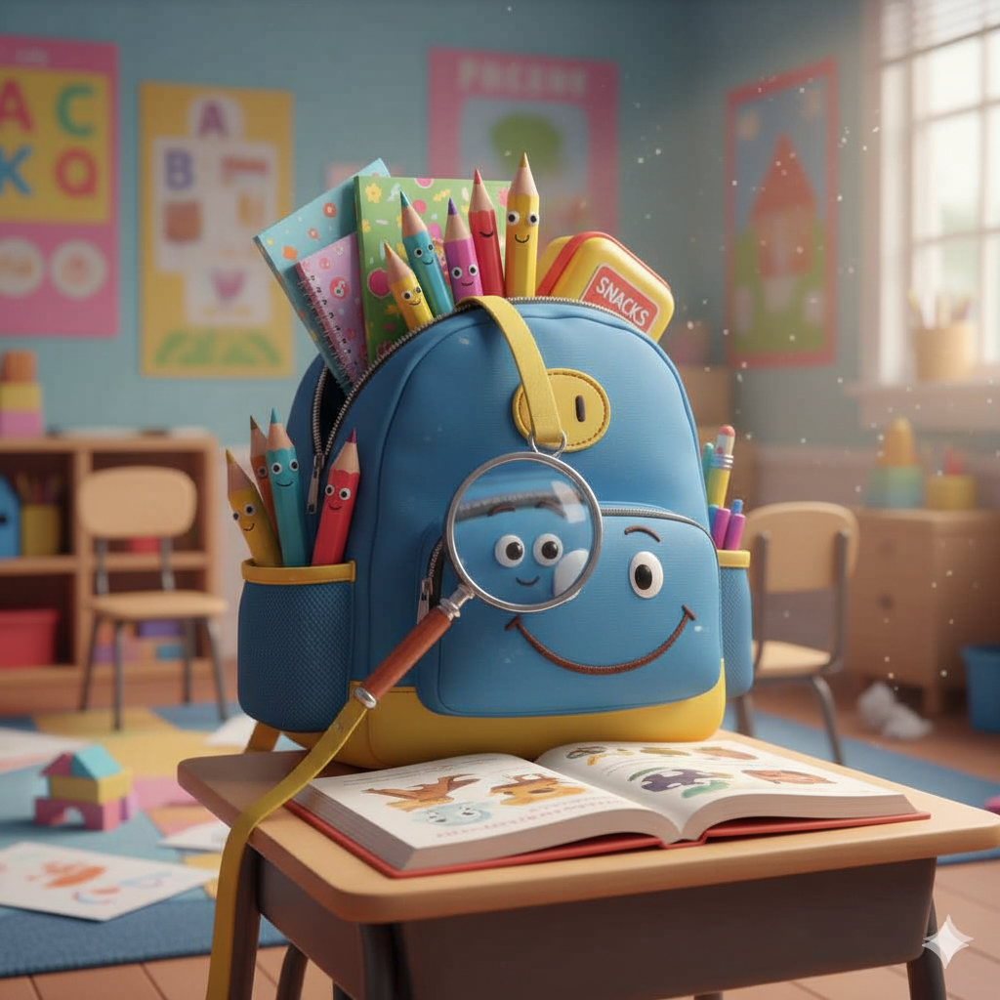

LA MOCHILA ESTABA LISTA DESDE LA NOCHE ANTERIOR. NO ERA UNA MOCHILA CUALQUIERA. ESTABA UN POCO PESADA, UN POCO INFLADA… Y MUY, MUY LLENA. LLENA DE CUADERNOS NUEVOS, DE LÁPICES CON GANAS DE DECIR COSAS, DE UNA CARTUCHERA ORDENADA Y CURIOSA.

PERO TAMBIÉN ESTABA LLENA DE COSAS QUE NO SE VEÍAN. DENTRO LLEVABA PREGUNTAS. ¿DÓNDE ME VOY A SENTAR? ¿HABRÁ RECREOS LARGOS? ¿Y QUÉ PASARÁ CUANDO ALGO NO SALGA COMO ESPERO? LA MOCHILA NO HABLABA, PERO SABÍA ESPERAR.

A LA MAÑANA SIGUIENTE, EL COLEGIO PARECÍA EL MISMO. LA PUERTA. EL PATIO. EL SALUDO DE SIEMPRE. Y SIN EMBARGO… ALGO ERA DISTINTO. YA NO ESTABA LA SALA DE JARDÍN. HABÍA UN PASILLO NUEVO.

UN AULA CON MESAS QUE INVITABAN A PENSAR. UN PIZARRÓN GRANDE, LLENO DE POSIBILIDADES. LA MOCHILA SINTIÓ UN COSQUILLEO.

EN PRIMER GRADO, LAS COSAS NO SE HACÍAN DE GOLPE. SE DESCUBRÍAN DE A POCO. APARECIERON DESAFÍOS NUEVOS. PALABRAS QUE PEDÍAN SER LEÍDAS MEJOR. TEXTOS QUE INVITABAN A VOLVER A LEER. IDEAS QUE CRECÍAN CUANDO SE COMPARTÍAN.

LA MOCHILA SE FUE ACOMODANDO. CADA DÍA PESABA DISTINTO… NO MENOS, NO MÁS. DISTINTO. PORQUE AHORA ESTABA LLENA DE PREGUNTAS MEJORES, DE INTENTOS, DE RISAS EN EL RECREO, DE ERRORES QUE ENSEÑABAN CAMINOS.

UN DÍA, LA MOCHILA ENTENDIÓ ALGO IMPORTANTE: NO TRAÍA SOLO ÚTILES. TRAÍA GANAS DE APRENDER. TRAÍA CONFIANZA. TRAÍA CURIOSIDAD POR LO QUE TODAVÍA NO CONOCÍA. Y ESO, EN PRIMER GRADO, ERA EL MEJOR COMIENZO.

HASTA EL PRÓXIMO CUENTO